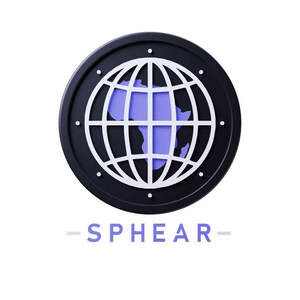

Trade Mark Journal No.2025/027 4 July 2025
UK00004213078 3 June 2025 (9,25,35,41,42)

- Class 9
- Downloadable computer software; Downloadable mobile applications; Computer application software for streaming audio-visual media content via the internet; Media streaming software; Electronic publications, downloadable; Downloadable digital music files authenticated by non-fungible tokens [NFTs]; Downloadable computer software for managing crypto asset transactions using blockchain technology.
- Class 25
- Clothing; Footwear; Headgear; Clothing authenticated by non-fungible tokens [NFTs].
- Class 35
- Provision of an online marketplace for buyers and sellers of goods and services; Provision of an online marketplace for buyers and sellers of downloadable digital image files authenticated by non-fungible tokens [NFTs]; Demonstration of goods; Sales promotion for others; Online retail services for downloadable digital music; Promoting the music of others by means of providing online portfolios via a website; Retail services relating to clothing; Online retail services for downloadable and pre-recorded music and movies.
- Class 41
- Providing non-downloadable electronic publications from a global computer network or the Internet; Providing online electronic publications, not downloadable, in the field of music; Digital music [not downloadable] provided from the internet; Musical entertainment; Providing information in the field of music; Providing on-line music, not downloadable; Entertainment services provided by on-line streams; Ticket reservation and booking services for education, entertainment and sports activities and events.
- Class 42
- Providing temporary use of on-line non-downloadable software for the transmission of data; Software as a service [SaaS]; Providing temporary use of non-downloadable software applications accessible via a web site; Providing temporary use of online non-downloadable software; Electronic storage of digital music; Providing online non-downloadable computer software for minting non-fungible tokens [NFTs].
Sphear Media Ltd
Representative: Trama Legal s.r.o.